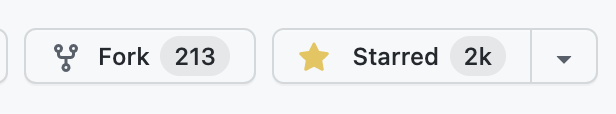

最近字节跳动春招开始了，春招、暑期实习、社招、日常实习都可以准备起来了，具体的情况可以看我之前发的文章：
https://mp.weixin.qq.com/s/9PvV7g_zy87puCGTsEje0A
这里还是用问答的形式来解答一些大家最感兴趣的问题，如果有其他问题可以直接留言或者加我微信（godweiyang）问我，有问必答！
想投我们部门的直接看最后两个问题。
我是什么部门的？
我是字节跳动AI Lab的火山翻译部门，所做的产品肯定就是火山翻译，当然我在部门里负责LightSeq模型训练推理加速引擎的开发。
火山翻译现在已经支持近百个语种的翻译，业务前景非常好，大家可以去试试效果：
我是负责啥的？
我是做LightSeq的，在我刚进部门时，LightSeq只有两位同事在开发，也只有推理引擎。而现在，连我在内一共有5位同事了，LightSeq也迭代了三个大版本了，囊括了模型训练、推理和量化等工具。
我们的目标不局限于机器翻译领域，而是要做业界最牛的机器学习工具，以后不管是NLP还是CV，只要用Transformer模型训练推理，都可以用LightSeq来加速和优化。所以我们不仅仅服务公司内的业务，还要打造出业界影响力，以后提到模型加速工具，LightSeq必定是绕不开的话题。
经过两年多的经营，现在LightSeq也算是小有名气了，在易用性和速度上肯定是业界一流的。

平时用啥编程语言？
组里的算法同学基本都用python，我的话因为涉及到CUDA，所以用c++和python都比较多。组里的后端还会用到go等语言。而深度学习框架的话，tensorflow和pytorch都有用的，看个人喜好。
男女比例怎么样？
组里技术同学大多数还是男生，但是我们组还有运营和产品，绝大多数都是女生，综合下来五五开吧。整个公司而言的话，反正我每天走在大楼里到处是好看的女生，所以你懂的。
公司伙食怎么样？
每天包三餐，吃的肯定比学校食堂好太多了，但吃多了也腻了，因此隔三差五伙食就会变的特别好吃一点，也可能是我太挑食了。饮料也是半价购买，零食免费随意拿，但是好吃的得趁早抢。下午茶是水果、面包、酸奶、鸡翅等轮回。
每天作息是啥样的？
大多数人都会在10点到10点半之间到公司，有些部门甚至11点才到。11点50吃午饭，午休到14点继续干活，15点多会有下午茶，18点45吃晚饭。如果没啥事的话，吃完饭就能走了。如果比较忙的话，有些部门会加班到9点左右，极个别很忙的部门会到11点以后。至于我的话，你懂的。
进AI Lab是不是要求很高？
很多人担心自己是本科、学校不好、没有论文等一系列问题，所以进不来AI Lab。其实不然，我们不怎么看学校和学历吧，就算你是清华的又如何，很多死读书的都不大行，更别说清华硕了，论文也只是加分项。所以把你的代码能力提升起来，项目搞起来，深度学习相关的专业知识熟练起来，就没问题了。
真有网上说的那么忙吗？
最近网上出现了各种不好的事情，可能是加班过多造成的，谁也说不准。其实刚刚作息也说过了，忙不忙看部门。有些部门是真的忙，没钱还干到深夜，有些部门又很闲，吃完晚饭直接走人。所以投递之前最好找个熟悉那个部门的人问一问真实情况，别踩了坑。
组里做研究还是做业务多？
业务为主，国内的AI Lab其实都差不多，我们火山翻译还算比较开放的，可以去做你感兴趣的研究，当然最好是能够落地应用，助力火山翻译上线的。如果有比较好的成果，还可以发论文或者申请专利。当然也有做文本生成、AI制药等方向，也有纯纯的研究岗位，只要你感兴趣，这里基本都能找到你想干的事。
组里年龄都多大？有35岁危机吗？
大多数人都不到30吧，都很年轻，更不存在什么35岁危机，因为几乎没有35岁的。只要你能力够强，就不存在35岁危机。
组里有多少人？
几十号人吧，组里技术、运营、产品都有，从两年前十几人壮大到现在，不容易。
组里转正率怎么样？
很高，只要你好好干，问题不大。而其他部门就各不相同了，需要跟hr问清楚了。
组里氛围怎么样？
非常nice，其乐融融。有啥不会，随便问人，都是大神。喜欢打游戏？王者大神多的是，午休随便搞两把。聊八卦、拉家常，反正就把公司当家里就完事了。
组里的技术怎么样？
前沿论文和技术都天天更进的，每周都有很多很多的分享和报告。组里的大神南大、复旦和交大的居多（因为在上海嘛），反正来了这别愁碰到解决不了的问题。
有团建吗？
两个月左右一次吧，迪士尼、天目湖、轰趴等等等等，每双月有生日会，免费给大家买蛋糕吃，活动多的很。再加上公司还会经常节假日搞活动，各种送东西福利。
会感到有压力吗？
压力肯定是有的，像我开发LightSeq，如果做得又好用速度又快，很多方案和技术都是需要自己去研究首创的，限定两个月搞出来？谁也说不准搞出来速度能有多快，然后又要不停优化，很多事情存在不确定性。但是有一定压力是好的，转化为动力，好好干活！
组里的显卡多吗？
V100和A100管饱，足够。
入职即巅峰？
字节比较扁平化嘛，很正常，但只要你工作做得好，绩效好，升职加薪还是没问题的。
公司配什么电脑？
技术的话mac pro顶配，三四年后就免费送你了。非技术的你也可以选择windows电脑。
允许同组谈恋爱吗？
没问题，报备一下就行了，话说我怎么还没找到对象？
组里离职率高吗？
其他部门我不知道，我们部门从创立以来，几乎没有离职的，非常稳定。
有跳槽打算吗？
什么？我才刚毕业不到一年，按目前来说的话，怎么也得干个三四年吧，挺舒服的，没必要跳。
吹了半天好，有啥缺点吗？
缺点肯定也是有的，技术上还有提升空间，赶超谷歌翻译一直是我们的目标。各种平台、流程等等，还需要时间去优化。
怎么一起来做LightSeq？
直接点阅读原文，或者看下图：

如果身边有合适的，也可以把岗位转发给他们。
怎么来火山翻译部门？
如果不想做LightSeq，想做其他NLP相关工作，可以直接投下面岗位：